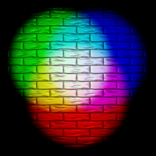
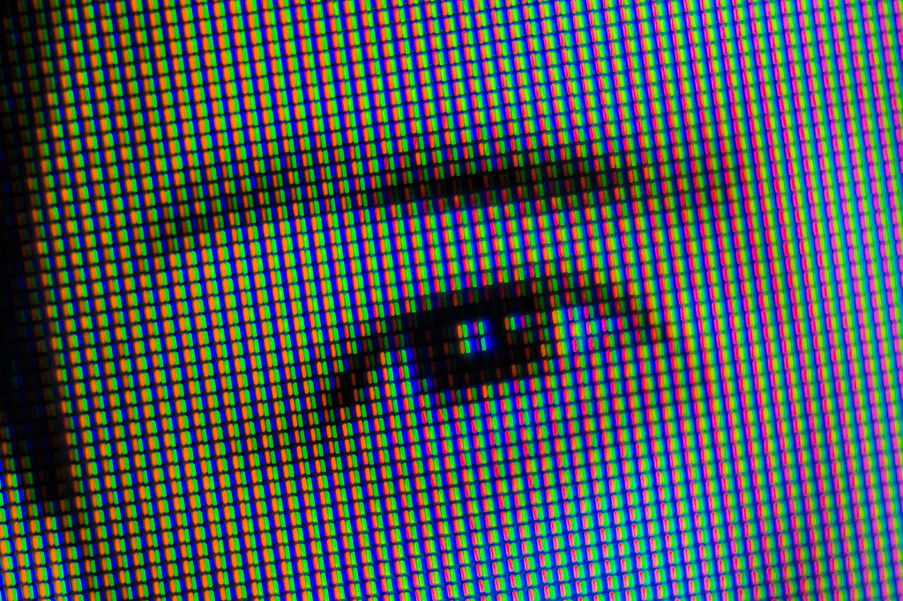
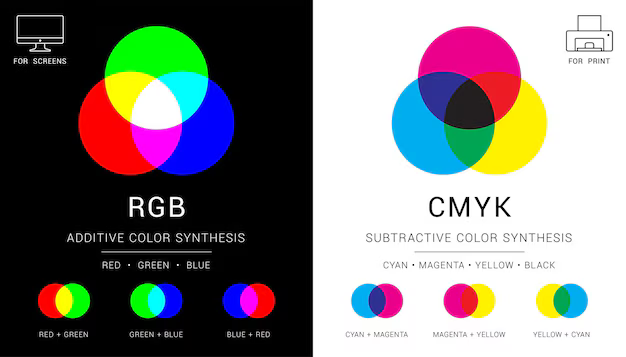

RGB: As Cores que Iluminam Nosso Mundo Digital
Já parou pra pensar como as cores do seu celular, TV ou computador são tão vibrantes e realistas? Pois é, isso tem um nome: RGB! RGB não é só uma sigla aleatória que você vê por aí, é a base de tudo que a gente vê no mundo digital. Vou te explicar de um jeito que até seu primo que não entende nada de tecnologia vai curtir:
RGB significa Red, Green, Blue, (Vermelho, Verde e Azul). Essas três cores são as "primárias" do mundo digital. Juntas, elas criam todas as outras cores que a gente vê nas telas. Tipo, quando você tá jogando aquele game irado ou assistindo um filme, é o RGB que tá lá, trabalhando nos bastidores, pra deixar tudo mais bonito e imersivo.
Mas como isso funciona? É simples, meu parceiro! Cada cor do RGB tem um valor que vai de 0 a 255. Quando você mistura esses valores, tipo um DJ misturando sons, você cria novas cores. Por exemplo, se você coloca o vermelho no máximo (255) e o verde e o azul no mínimo (0), o resultado é um vermelho bem vivo. Agora, se você mistura os três no máximo, o que você acha que acontece? Isso mesmo: branco puro! E se todos estiverem no 0? Aí é preto total. É tipo mágica, mas com ciência por trás..
E não para por aí, mano. RGB não é só pra telas. Tem teclado, mouse, até capinha de celular que brilha com essas cores. É o famoso "efeito gamer", que deixa tudo mais estiloso. Mas, no fim das contas, o RGB é mais do que um visual daora: ele é a essência de como a gente enxerga o mundo digital.
Pixels e RGB: A Magia das Cores na Tela
Sabe aquelas imagens super nítidas que a gente vê no celular ou na TV? Tudo isso é culpa dos Pixels e do RGB. Cada pixel é um pontinho minúsculo que, junto com milhões de outros, forma a imagem. E dentro de cada pixel tem três cores do RGB que juntas, elas criam todas as outras cores..
Como disse o pixel é a menor unidade de uma imagem digital. É um minusculo quadrado! Mas você deve se perguntar: Como que sai cor?
Cada cor do RGB tem um valor que vai de 0 a 255. Quando você mistura esses valores, o pixel muda de cor. Por exemplo, vermelho no máximo (255) e verde e azul no mínimo (0) deixam o pixel totalmente vermelho. Se os três estiverem no máximo, o pixel fica branco. Se todos estiverem no 0, fica preto. É tipo uma receita de cores!
E como isso vira uma imagem? A tela controla cada pixel individualmente, ligando e desligando eles super rápido, mudando as cores conforme a imagem. É assim que a gente vê vídeos, fotos e jogos com gráficos irados. RGB e pixels são a dupla perfeita do mundo digital!
CMYK: As Cores que Dominam o Mundo Impresso
Enquanto o RGB manda nas telas, o CMYK é o rei das impressões. Essa sigla representa quatro cores: Ciano (C), Magenta (M), Amarelo (Yellow) e Preto (Key). Juntas, elas criam todas as cores que a gente vê em revistas, panfletos e até naquela camiseta personalizada.

Diferente do RGB, que usa luz pra criar cores, o CMYK usa tinta. Cada cor é aplicada em camadas, e a mistura delas gera novas cores. Por exemplo, ciano e amarelo fazem verde, enquanto magenta e amarelo criam o laranja. O preto (Key) entra pra dar mais profundidade e definir os contornos.
E por que não usar só o RGB? Porque na impressão, as cores são feitas com pigmentos, não com luz. O CMYK é o esquema perfeito pra garantir que as cores saiam exatamente como você vê no papel. Então, da próxima vez que pegar um flyer ou um livro, lembra: o CMYK tá por trás de todas aquelas cores vivas!
RGB e CMYK: Do Digital ao Papel, as Cores que Movem o Mundo
No fim das contas, RGB e CMYK são dois lados da mesma moeda. O RGB, com suas cores de luz (vermelho, verde e azul), domina as telas, trazendo vida pro seu celular, TV e computador. Já o CMYK, com suas tintas (ciano, magenta, amarelo e preto), comanda o mundo impresso, garantindo que as cores saiam perfeitas em revistas, panfletos e muito mais.
Enquanto o RGB cria cores através da luz, o CMYK usa pigmentos, e cada um tem seu papel essencial. O RGB é a magia do digital, e o CMYK é a arte do impresso. Juntos, eles fazem o mundo ficar mais colorido, seja na tela ou no papel. Então, da próxima vez que ver uma imagem incrível, lembre-se: por trás dela, tem sempre um RGB ou um CMYK trabalhando pra deixar tudo perfeito!
